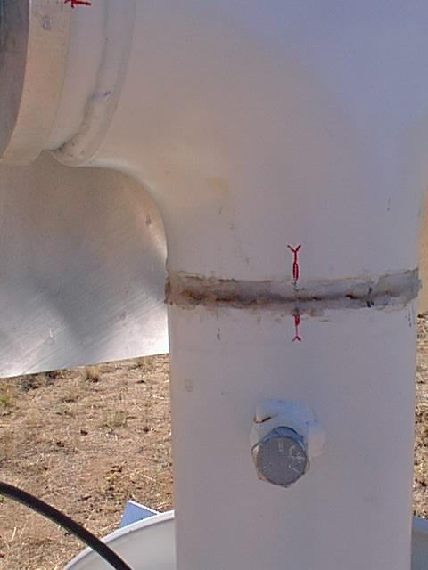

Figure 1 shows the basic features of the design. The signal source is the digital television band broadcast by the DBS-1 satellite. The power in this band, spanning 12.2 to 12.7 GHz, is orders of magnitude more than that from the communications satellite beacon tones used by previous systems.
The primary goal is to measure the difference in electrical path length between two parallel columns through the atmosphere, p1 - p2. These columns are sampled by two flat reflectors, which direct the two beams onto a single commercial 18" (50 cm) satellite dish. The diplexed signals are then amplified, down-converted to a band from 950 to 1450 MHz, amplified again and sent via coaxial cable to the electronics box, located in a pit midway along the 100 m baseline. After further amplification, the signal path is split; there is a delay of 100 m in one arm with respect to the other, corresponding to the length of the baseline. The signals in the two arms are multiplied together using a pair of Gilbert Cell multipliers to obtain both the in-phase and quadrature correlation products. A double-balanced mixer in one arm is used to impose a 1 kHz 180o phase switch on the signals to help remove the Gilbert Cell DC offset. The switching waveform is used to demodulate the multiplier outputs, and the resulting voltages are time averaged over 1 s and sampled at 1 Hz by an Analog-to-Digital converter.
Signals from both columns 1 and 2 are present in each arm, but there is only one combination with zero delay offset at the correlator, namely column 1 in the short arm and column 2 in the long arm. The other combinations have either 100 or 200 m of relative delay and therefore do not produce a correlated output. This technique is possible because the signals are broadband, with a coherence length of only 60 cm; monochromatic signals have a much longer coherence length and cannot be separated on the basis of delay.
The in-phase and quadrature correlation products define a vector, with amplitude proportional to the signal power and phase given by
2 * PI * (p1 + p3 - p2) / LAMBDA.......................................(1)
However, since we wish to measure p1 - p2, the ground path contribution p3 must be removed. This is achieved by adding the mirror image of the system shown in Fig. 1, which measures
2 * PI * (p2 + p3 - p1) / LAMBDA. .....................................(2)
The two interferometers are co-mounted, with an 18" dish, small flat and large flat at each end of the baseline, as depicted in Fig. 2. Taking the difference between Eqs. (1) and (2) gives the difference between the sky path lengths, p1 - p2; taking the sum gives the fluctuation in the ground path, p3.
An RS485/RS232 communication link sends the data to a environment computer in the main control building, where the phasemon program is running continuously to acquire, process and save the data. A graphical interface to the data products is provided by a series of WIP routines.
Because the signals from the two columns are down-converted together and pass through the same amplifiers and cables before the split, any phase drifts in these components will be in common and have no effect, alleviating the need for thermal stability. The simple design, with minimal components and no phase-locked loops or filters results in a low-cost and robust system.
There are 3 Hughes Direct Broadcast Satellites at the 101o W longitude slot in the ring of geostationary orbits, separated by 0.2o. DBS-1 is configured with 16 transponders broadcasting 120 W each in Left Circular Polarization. The carrier phase of each transponder is modulated (using Quadrature Phase Shift Keying) with a bandwidth of approximately 30 MHz. DBS-2 and DBS-3 broadcast in Right Circular Polarization, together delivering 240 W in each of 16 subbands. Complications arise if the signal originates from more than one satellite, so the interferometer observes the left circular polarization signal from DBS-1, at an azimuth of 133o and elevation 43o. The Effective Isotropic Radiated Power (EIRP) for a location in California is ~53 dBW, roughly 104 times more powerful than the communication satellite beacon tones utilized by Radford, Reiland & Shillue (1996); this corresponds to an energy flux of approximately 1.1x 10-11 W m-2 at Hat Creek. Maps of the EIRP for these and other broadcast satellites can be found on the World Wide Web. The center frequency of the broadcast band is at 12.45 GHz, with a corresponding wavelength of 2.4 cm. In the subsequent reception and processing, the signal is treated without regard to its information content.
The baseline is 98.5 m long, at an azimuth of 43o with respect to magnetic North, perpendicular to the satellite direction. The large and small flat reflectors have dimensions of 762 x 610 mm and 762 x 229 mm, respectively, and can be freely adjusted in both azimuth and elevation. Bouncing the signal off the large reflector and the subsequent propagation along the baseline length D reduce the signal flux at the receiving dish by a factor of approximately (LAMBDA * D)2 / (Ar cos45o)2,where Ar is the surface area of the large reflector. This calculation assumes that the receiver is in the far field of the large reflector, and that the large reflector is oriented at 45o with respect to both the satellite and the receiver. For the dimensions given above, this attenuation factor is ~ 50. The reflectors and dishes are mounted on rigid stands constructed from 4" diameter steel pipe, set into a concrete foundation.
The reflectors should be tightly clamped in position, and will only need realigning if given a strong knock. Lining up the red marks on each reflector should be sufficient to obtain a signal (click on image for full-size version). The output voltage amplitudes are quite sensitive to these positions, and should be checked after any adjustments. There is another DBS satellite at a longitude of 119o W that has a very similar spectrum that might cause confusion.
Large reflector
The dishes can be adjusted in elevation and should be aimed at the large flat reflector at the other end of the baseline. There are no alignment marks. The correct position is with the plate tipped back almost as far as it will go, with about 1/8" clearance between the end of the upper stand-off thread and the vertical tube of the mount.
Should it be necessary, a power meter can be used at any point in the system to maximize signal strength. If the measurement is performed between the LNB frontend and the electronics box, then a bias tee must be used to separate the 14 volt DC power going out to the frontend and the RF signal coming back. It is also possible to maximize the voltages from the output of the correlator.
The dishes are standard consumer 18" diameter satellite dishes (Sony). These were purchased for $30 each, including the Low Noise Block (LNB), containing the feed, frontend amplifier and down-converter. Lab measurements gave an effective receiver temperature of ~ 150 K. The dishes are mounted onto a 1/4" steel backing plate with stand-offs to provide extra stiffening.
The LNB contains an oscillator that is used to perform the down-conversion. The exact frequency drifts with the ambient temperature (by of order 50 kHz). This causes a small drift in the phase response of the instrument (see Known problems / features).
The LNB frontends can receive both left and right circular polarizations, according to the voltage of the DC power supply (11.5 - 14.0 V = RHCP; 16.0 - 19.0 V = LHCP). Observing the left circular broadcasts from DBS-1, requires that the LNB receives in right circular mode, since there is an extra reflection in the path that reverses the sense of the circular polarization. This effect also means that the instrument is not sensitive to the problem of ground reflections. A DC supply of 14 V is used to drive the LNB.
Gain ~ 13 dB, bandwidth 950 - 2050 MHz. Two F-type connectors. Power from the 14 volt DC supply sent from the correlator box to the LNB. Strapped to the side of the mount, protected by a section of black heat shrink tubing and silicone grease for waterproofing. Purchased from National Home Theatre (615-895-4646).
Times LMR-400, 50 Ohm impedance, 0.84c propagation speed, loss = 3.88 dB per 100' at 900 MHz, $430 per 1000 ft (purchased from Tessco 800-472-7373). Chosen primarily for low loss.
1.5" plastic conduit brings the cable from the dishes to the pit-box, at a depth of about 2'. The cable runs are approx. 60 m from the SW dish and 55 m from the NE dish. The pit box is not exactly midway because the AC power cable was not long emough to reach from Lab 2. There are extra turns of cable from the NE dish in the pit box; this extra length was kept to avoid an electrical length of close to 100 m for the round-trip reflection path (correlator box to in-line amp to correlator box).
The two delay lines are approximately 84 m long (electrical length ~ 100 m) and are wound onto the same spool in the pit box.
A total of 6 RF cables go into the correlator box, fitting in the 3 large slots cut into the side of the box. The cables are labelled. Those associated with the SW dish (white tape on the connectors) go underneath; those associated with the NE dish (red tape on the connectors) go on top (click on image below for full size version). As seen in the close-up picture below, the left-to-right order of cables is delay in, antenna, delay out, matching the layout inside the box.
The large RF cables are connected to the SMA inputs / outputs of the correlator boards via 6 short lengths of flexible cable that provide strain relief. These should be labelled. The level of strain relief is not ideal and care should be taken when connecting and disconnecting.
Located roughly midway along the baseline, this provides a benign environment for the correlator box and delay lines. The white wooden cover stops the meltwater from accumulated snow getting into the pit box down the side of the concrete lid. There may be a dead lizard in the pit box.
Power for the correlator box (and therefore the LNBs and in-line amplifiers) comes from Lab 2. The cable is plugged into a wall socket behind the sheet metal rack, on the West side of the building. It then runs in 1.5" conduit to the pit box. If it is necessary to run extra instrumentation at the pit box on AC power, the short adaptor cable can be used (this should be left in the pit box).
This NEMA box contains two power supplies, two correlator units, the demodulation board, the A/D converter and fan for cooling.
Reverse the above sequence. RF cables should be in the appropriate slots. The fan sometimes doesn't start properly. Try banging the lid onto the main part of the box to give it some stimulation.
This should be straightforward. There is a connector for disconnecting the fan. The baseplate is removed by undoing the brass screws at each corner. The `stack' can be disassembled from the top down, or can be removed in one piece by removing the screws in the bottom of the baseplate. Some of the stand-offs have filed notches to provide clearance from the correlator units. The inputs to the A/D unit are color coded to correspond to the wires. The correlator units have `lower' and `upper' labels to indicate where they go in the stack. Click image for full size version.
Circuit diagram, component layout for top and bottom of board. NOTE: one modification has been made that is not included in these figures:
There is one correlator unit for each of the two separate interferometers. A basic description and context is given in Basic Principles. There are 3 basic sections to the board:
As depicted in Fig. 1, there are 5 SMA connections to each board: the input from the dish LNB, trim in and out, and delay line in and out. Power supply is +14 V / +10 V / Gnd. There are also feedthrough outputs for the two voltages representing the in-phase and quadrature correlation products. Click on images for full-size version.
Some of the components get quite hot during normal operation: the bias resistors for the two amplifiers, the MSA-0520 amplifier (there is a hole in the circuit board under this device which has been filled with solder, and a copper strap has been connected to the top side), and the Gilbert Cell multipliers (stand-offs mounted on the lid with some thermal grease provide extra cooling).
The INA-10386 amp has a nominal gain of 25 dB; the MSA 0520 has 8.5 dB. In practice, the combination seems to have a gain of around 40 dB. See also Signal levels.
The match at the input is not very good, and some form of attenuation is needed to prevent oscillation. The long length of RF cable to the LNB serves this purpose. The INA-10386 is biased to operate with a supply current of ~ 50 mA; the MSA 0520 operates at ~ 90 mA.
Warning: Don't connect a regular attenuator to the input (or anywhere between the correlator unit and the frontend) because it will draw excessive current from the 14 volt DC bias voltage.
The signal passing through one of the arms is inverted at regular intervals, which also inverts the correlation products. This modulation is used to remove the DC offset at the output of the Gilbert cell multipliers. A ZEM-4300MH double-balanced mixer performs the inversion, driven by a 1 kHz square wave of approximately +/- 5 V generated by the 555 timer on the Demodulation board. The insertion loss of the mixer is about 8 dB.
The 555 timer is able to drive current loads well in excess of the 10 mA used to switch the mixer diodes on and off. There is a voltage drop with increasing current load that his higher for the positive part of the cycle than the negative part (i.e. it is more efficient as a current sink than a source). This asymmetry needs to be balanced, so that the output power from the mixer is independent of the switching state. The balance circuit shown here is mounted on a stand-off underneath the stack.
The pots have been adjusted to give equal output power for each switching state. If this needs to be repeated:
These short lengths of cable offset the length of the delay lines and can be used to change the relative delay without re-cutting the large cables. They also provide a connection to the mixers used for the phase switching.
Gilbert cells are `active mixers' that multiply together two RF signals to generate an IF output. They are made by Hewlett Packard (IAM 82008), can be obtained from Newark distributors (~$3 each), have an input bandwidth of 5 GHz and provide about 15 dB of conversion gain.
In this application, only the DC output at the IF (modulated by the phase switching) is of interest. Since the ICs take only a single polarity supply (+10 V in this circuit) the IF output sits at about 5 V in the absence of correlated signals. The exact value of this offset voltage is sensitive to the power levels of the signals applied at the LO and RF ports, and so has a tendency to drift around. This was the primary reason for introducing the phase switching.
The input RF power at either LO or RF ports should not exceed +14 dBm. The power levels during normal operation are both close to 0 dBm. The mixers are operating in a somewhat saturated mode, which seems to give satisfactory results.
The ICs run quite hot. This is why they are run at 10 V (they run much hotter at higher voltage). Stand-offs mounted on the lid of the correlator unit provide an extra cooling path.
The output of each Gilbert cell multiplier is a noisy 1 kHz square wave whose amplitude is the desired signal, superimposed on a DC offset of about 5 V. The demodulation board extracts the amplitude of the square wave from each of the 4 multiplier outputs, applies a 1 sec time average and a gain of 20 before the voltages are passed to the A/D unit.
The 1kHz switching waveform is generated by a 555 timer in a standard astable configuration. See 180o phase switching for further details. The rest of the circuit consists of 4 identical sections, each of which processes one multiplier output. The DC component of each incoming signal is blocked with a capacitor and a voltage follower provides a buffer at the input to the AD630. The latter is configured with two gain blocks, one provides +2 and the other -2 gain, and they are switched in and out according to the polarity of the voltage on Pin 9 (a reduced amplitude version of the switching waveform). The demodulated output is time averaged and amplified by a further factor 10 by a standard RC op-amp arrangement. The trim pots are adjusted to ensure zero output for zero input.
Circuit diagram, component
layout
Note: the following modifications have
been made that are not included in these drawings:
Click on image for a full-size version.
Advantech ADAM 4017, 16 bit resolution in up to 8 multiplexed channels. Opto-isolated, runs off +10 to + 30 V, RS-485 / RS-232 protocol (see communication), up to 10 samples per sec.
The unit is mounted on the baseplate of the electronics box and requires a power supply (14 V), connection to the twisted pair for communication (using the color code indicated by the little color strips on the box), and connection to the 4 input voltages (also with appropriate color coding). Click on the image for a full-size version.
The unit converts input voltages into ASCII strings that are sent down a serial line to the environment computer. Communication is through a simple `Command - Reply' protocol. Here are some examples:
| Purpose | Host command | Reply from A/D unit |
| Get config status from A/D at address 01 | $012 | !01080600 |
| Change the configuration of A/D at 01 | %0102080600 | !02 |
| Enable only channels 0 to 3 for multiplexing on A/D with address 01 | $0150F | !01 |
| Read the value of channel 2 of the A/D unit with address 01 | #012 | >+1.4567 |
| Read the values of all channels selected for multiplexing (assume chans 0 to 3) on A/D with address 01 | #01 | >-0.3421+1.9425+1.4567-0.5112 |
A complete description of commands and replies can be found in the ADAM 4000 series User's Manual. Note: the last example (which is actually used to acquire the 4 voltages) is not listed in the Manual, and was discovered by accident.
The A/D is configured to operate with an address of 01, a range of -10 to +10 V, with a 50 ms integration time (to eliminate 60 Hz noise), a serial communication speed of 9600 baud, checksum disabled, and engineering units (i.e. volts) as the format. This is what is indicated by the reply code given in the first example above.
A twisted pair connects the A/D unit with an ADAM 4520 (a similar looking unit) that converts the twisted pair RS 485 signals into RS 232 protocol (see Diagram). A map of cable routings shows how the twisted pair gets to the control building.
Some of the commands and responses used to communicate with the A/D unit are described in the A/D section.
Data from the phase monitor goes to the CARMA computer environment.carma.pvt (serial port 2, connected to the USB<->serial 4 port dongle aka /dev/ttyUSB2). The carmaPhaseMonitor program runs continuously in the background, with little loading on the CPU.
The source for carmaPhaseMonitor is in the CARMA source tree under carma/carma/phasemonitor
This program runs continuously as a background process on the environment computer. It requests readings of the 4 voltages every second from the A/D unit. These are converted into phases, and then to ground path and sky path difference measurements (see Basic principles). The following data files are generated:
Making changes to carmaPhaseMonitor:
You need to be familiar with the regular CARMA build/install process to do this. Please ask the CCWG or colby at astro dot berkeley dot edu
Approximately half of the power is due to thermal noise from the frontend and pickup from the ground. The other half is dominated by the signal from the small reflector. The signal from the large reflector is down by a factor of about 20. Remember that the amplitude of the correlated output is proportional to the geometric mean of the two input signals, i.e., reducing the signal power from the large reflector by a factor of four only reduces the output voltages by a factor of two.
If there is a problem, the power level at the delay line output is the easiest to measure, since there is no DC voltage on the line at this point. All the other power levels above should be considered as estimates. Different LNBs will have different output levels.
Note: that for all of the above problems, the ground path measurement is affected by the same amount or more compared to the sky path measurement. The measured ground path rms is therefore a good upper limit to the uncertainty in sky path.
Complex
voltage traces tilted ellipse, not circle
The loci displayed by the corrected calibration plots (which are close to circles)
represent corrected voltages. Without correction, the voltages trace out
tilted ellipses. The corrections are made in the carmaPhaseMonitor program
to convert the ellipses into circles. The problem is caused by the second
input to the quadrature splitter (JH-141) not being terminated by 50 ohms
(it's an open circuit). There is a reflection off the Gilbert cell inputs
that goes back out through both inputs of the JH-141, gets reflected by
the open circuit and then returns back to the Gilbert cells. The phase
shifts through the splitter are such that the complex vector representing
this reflection component rotates in the opposite sense to the real signal
component as the phase is changed, and the ideal circle becomes an ellipse.
The software correction seems to work well enough, but it should also be
easy to add the correct termination to the JH-141. In this case the software
corrections can be disabled (but not for the voltage offset - see below).
Voltage Offset
The 180o phase switching is supposed to remove all offsets
from the correlator outputs, so that in the absence of correlated inputs
there is zero voltage at the output of each demodulated channel. There
are, however, small offsets present after phase switching has been applied.
The constant components of these offsets are removed by corrections in
the carmaPhaseMonitor program, but small time-variable shifts remain. When
the offset is not quite right, the complex amplitude shows small fluctuations
dependent on the phase, which introduces the low-level modulation in the
signal strength plots displayed by the instrument status plot. The reason is probably
that the reflection from the mixers used for phase switching depends on
the switching state. Thus, the power level at the input to the Gilbert
cells has a residual fluctuation in synch with the phase switching that
produces a non-zero output (the Gilbert cell output is sensitive to input
power level). The main result of a non-corrected offset is that the sky
path rms and ground path rms measurements are not perfectly decoupled,
and there is a small (<10%) `leakage' between the two. e.g. If
the sky path rms is 500 microns, then the ground rms path will be 50 microns,
even in the absence of real ground path fluctuations. Since sky path rms
is invariably larger than the ground path rms, it is the latter measurement
that is degraded. This problem is not severe, but could be improved by
adding extra attenuation between the phase switching mixer output and the
input to the Gilbert cells.
Intermittent
narrowband spectral features
There are sometimes periods during which there are narrowband spectral
features present at around 900 MHz (i.e. about 50 MHz below the start of
the broadcast band). These vary quite rapidly with time, and come from
a point on the sky very close to the DBS satellites. The exact origin is
not known. Although the total power in these signals is weak compared to
the TV signals, their impact is amplified by their narrowband nature, which
is not affected by the 100 m delay offset in the system. i.e. power from
the spurious peaks entering via the small reflector only (no loss due to
propagation from the large reflector) can produce a correlated output despite
the delay offset, and because the frequency and amplitude of these peaks
varies with time, the effect appears as increased phase noise. Again the
effect is not that large (it appears equally in both the sky path rms and
ground path rms. Filters could be used to greatly remove the impact of
these spurious features. Old filters for the LO reference signal of
the mm array could be used, and 2 have been set aside should this be necessary.
They would be best inserted after the in-line amplifier; inserting them
at the input to the correlator units would require extra attenuation to
reduce the effect of the poor match at the amplifier inputs. The filters
would need to be modified to have a DC pass for the LNB power
supply voltage.
Local oscillator drift
The local oscillator frequencies that are used for the down-conversion
in the LNB frontends drift a little with ambient temperature. This produces
a spurious phase drift in the system output. The reason is that the signals
are centered on a frequency of 1.2 GHz when they pass through the delay
lines, but the original delay offset is incurred at around 12.4 GHz as
the signals propagate from the large reflector to the dish 100 m away.
It is easy to show that the ground path measurement is sensitive to the
common-mode variations in the two LO frequencies. The apparent change
in ground path is given by (delta_FLO1 + delta_FLO2)
100 m / 12.4 GHz. The sky path is sensitive to the difference in the LO
drifts. The apparent change in the sky path measurement is (delta_FLO1
- delta_FLO2) 100 m / 12.4 GHz. A change of 1 kHz in an
LO frequency produces an apparent path change of 8 microns. Since most
temperature changes are common to the two frontends, the impact will be
mostly in the ground path measurement. The largest relative drift in the
two frequencies will occur when one becomes shadowed for a long period
of time while the other remains in the sun. This effect was measured, and
there was a 50 kHz relative drift over a period of an hour, corresponding
to a 400 micron drift in the measured sky path. This has very little impact
on the 10 minute rms measurement.
Here is an example of the output from the pmn_status command when the instrument is working normally.This can be compared to the current version.
Oliver Lay, Sept. 1998
Please report problems with the system or documentation to Douglas Bock: dbock@astro.berkeley.edu{kind=link}
{kind=link}
{kind=link}
{kind=link}
{kind=link}
{kind=link}
{kind=link}
{kind=link}
{kind=link}
{kind=link}
{kind=link}
{kind=link}
{kind=link}
{kind=link}
{kind=link}
{kind=link}
{kind=link}
{kind=link}